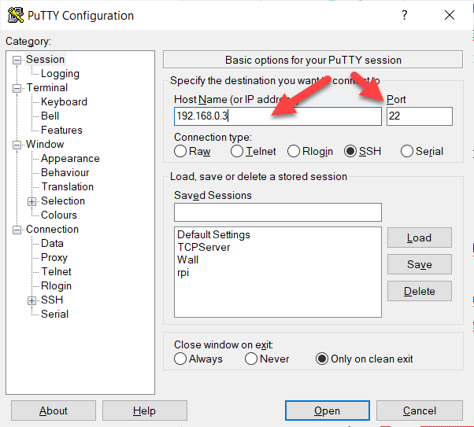

De transport laag bevindt zich tussen de netwerk laag en de applicatie laag. Op de netwerk laag vinden we het IP adres terug. Dit adres is bedoeld om iedere netwerkkaart uniek te identificeren binnen het netwerk én om het mogelijk te maken dat we pakketten kunnen versturen over verschillende netwerken heen.
Hier zit er echter nog een probleem. Op dit moment kunnen we met de netwerk laag pakketten versturen van computer naar computer maar nog niet van applicatie naar applicatie.
De Transmission Control Protocol header lost dit probleem op aan de hand van een source port en een destination port. Deze poorten worden namelijk gekoppeld aan applicaties die op de machine draaien.
Source port (2 bytes) | Destination port (2 bytes) | ||
Sequence number (4 bytes) | |||
Acknowledge number (4 bytes) | |||
Header length (4 bits) | Reserved (6 bits) | Code bits (6 bits) | Window (2 bytes) |
Checksum (2 bytes) | Urgent (2 bytes) | ||
Options (n bytes) | |||
Data (n bytes) | |||
De source port is het poortnummer van de applicatie die wil zenden. Het besturingssysteem kan hiervoor in theorie een willekeurig poortnummer tussen 0 en 65535 kiezen. In de praktijk wordt meestal een poort tussen 49152 to 65535 gekozen. Het source poortnummer kan telkens veranderen. Meestal wordt een poort geopend voor slechts een korte periode gezien bij pakketgeschakelde netwerken de datatransmissie vaak in bursts verloopt.
De destination port is het poortnummer van de applicatie die de data moet ontvangen. Een zender moet dus twee zaken weten over de ontvanger: het IP adres van de computer en de poort van de applicatie.

Het zou dus weinig praktisch zijn om voor de ontvanger de poort te laten variëren. De zender zou dit dan telkens ook moeten weten. De meeste applicaties hebben dus een 'vast' poortnummer. Om er enkele op te noemen draait een webserver op poort 80, een e-mailserver op poort 25 en een secure shell server op poort 22.
Naast de poortinformatie zien we in de TCP header nog twee heel belangrijke velden: het sequence en acknowledge number.
| Source port | Destination port | ||
| Sequence number | |||
| Acknowledge number | |||
| Header length | Reserved | Code bits | Window |
| Checksum | Urgent | ||
| Options | |||
| Data | |||
De hoofdeigenschap van TCP is dat we pakketten 'gegarandeerd' willen afleveren. Dit betekent dat we pakketten die verloren gegaan zijn door transmissieproblemen of collisions toch nog bij hun bestemming willen krijgen.
Het feit dat we dit proberen heeft als gevolg dat pakketten eventueel niet in volgorde aankomen. Om de pakketten toch nog te kunnen sorteren langs de kant van de ontvanger krijgt ieder pakket een sequence number.
Gegarandeerd afleveren is noodzakelijk wanneer het gaat over bijvoorbeeld bestandsoverdracht. Een document versturen heeft niet veel zin als er een stuk uit verloren is gegaan.
TCP lost dit op door middel van een acknowledgement number. Ieder pakket wordt bevestigd door de ontvanger door naar de zender een pakket te sturen met de boodschap dat het verzonden pakket goed ontvangen is geweest.
De zender verwacht binnen een bepaalde tijd een acknowledgement van het verzonden pakket. Krijgt deze dat niet dan wordt het pakket opnieuw verstuurd.
Naast TCP is UDP een veelgebruikte keuze wat betreft het protocol op de transport laag.
We moeten echter even opmerken dat het bepalen van het protocol al gebeurd is in de netwerk laag op de IP header. Daar vind je bij IPv4 het Protocol veld terug en bij IPv6 het Next Header veld. De waarde in deze twee velden bepaalt als er TCP of UDP of nog een ander protocol gebruikt wordt voor het pakket.
Terwijl TCP zijn uiterste best doet om pakketten gegarandeerd af te leveren bij de ontvanger door middel van hertransmissie bij verlies en het zelfs tot fouten leidt wanneer een datastroom niet volledig ontvangen is, is dit bij UDP niet het geval.
Bij UDP is er bij verlies van een pakket geen hertransmissie en dus ook geen gegarandeerde aflevering.
Je vraagt je misschien af wanneer UDP gebruikt wordt? Toch zijn er enkele toepassingen zoals VOIP (Voice Over IP = bellen via het netwerk), videoconferencing en games. Het heeft namelijk geen zin om bijvoorbeeld bij een telefoongesprek verloren stukjes spraakdata na een tijdje toch opnieuw te sturen. Het moment is dan reeds voorbij en het zou enkel verwarrend zijn voor de ontvanger.
Als we kijken naar de UDP header dan zien we dat deze véél minder complex is dan de TCP header. Er zijn slechts vier velden en twee ervan beschrijven de data. Dit wijst dat UDP een protocol is die gemaakt is voor snelheid.
Source port (2 bytes) | Destination port (2 bytes) |
Length (2 bytes) | Checksum (2 bytes) |
Data (n bytes) | |
Net zoals bij TCP dienen source port en destination port als identificatie voor de applicatie.